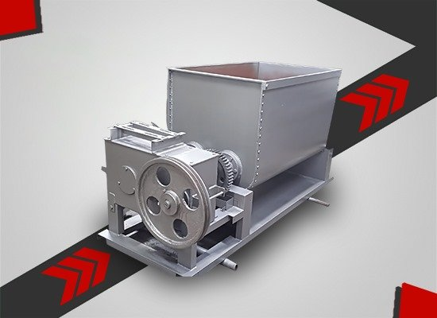

| S. No | Capacity | Per Day Capacity | Power Req. | Size | HxBxW |
|---|---|---|---|---|---|
| 1 | 1200 kg | 8 hrs | 3 H.P. | 22 × 22 × 44 | 44 × 88 × 24 |
| 2 | 2400 kg | 8 hrs | 5 H.P. | 28 × 30 × 47 | 55 × 96 × 30 |
| 3 | 3600 kg | 8 hrs | 7.5 H.P. | 35 × 35 × 50 | 60 × 105 × 37 |
| 4 | 8000 kg | 8 hrs | 20 H.P. | 40 × 42 × 70 | 40 × 118 × 58 |
Looking for a reliable Dhoop Making Machine in Delhi? V.S. Engineers is one of Delhi's oldest and most trusted names in dhoop and incense machinery. Since 1985, we have been manufacturing high-quality dhoop making machines right here in Bawana, New Delhi — supplying dhoop factories, agarbatti units, and incense brands across India.
Whether you need a Wet Dhoop Stick Machine, Dhoop Cone Machine, Raw Mixture Machine, Crushing Machine, or Stick Cutting Machine, we build complete production line solutions under one roof. With 35+ years of engineering experience, our machines deliver durable, high-output performance that Delhi's manufacturers count on every single day.
A Dhoop Making Machine is an industrial machine used to produce dhoop sticks, cones, cups, or paste-based incense products. Depending on the type, it can mix raw materials, crush ingredients, extrude wet paste into sticks, cut sticks into uniform sizes, or shape cones — either fully automatic, semi-automatic, or hydraulic.
For dhoop manufacturers in Delhi, having the right machine means faster production, uniform quality, and higher profit margins. That is where V.S. Engineers steps in.
V.S. Engineers is a Delhi-based dhoop making machine manufacturer with a legacy of over three decades. Founded in 1985, we started with a simple mission — to design machines that last a lifetime and help Indian dhoop makers grow their business.
Today, our manufacturing facility at DSIIDC Industrial Area, Bawana, New Delhi is one of the most respected engineering units in the Delhi NCR region. Every machine we build is:
At V.S. Engineers, you get the entire dhoop production line — not just one machine. Here is what we manufacture:
Mixes charcoal, jigat, wood powder, herbs, and fragrance oils into a uniform paste. Available in 1200 kg, 2400 kg, 3600 kg, and 8000 kg capacities.
Crushes raw materials into fine, uniform powder — the foundation of every good dhoop stick.
Extrudes wet paste into bamboo-free solid dhoop sticks. Electric and hydraulic models with capacities from 450 kg to 2500 kg per 8-hour shift.
Cuts dhoop sticks into perfectly uniform lengths — from 2 inches to 12 inches, with 200–400 sticks per minute output.
Shapes prepared paste into premium aromatic dhoop cones and backflow cones with uniform size and smooth finish.
Buy any single machine or the complete production line — the choice is yours.
While most competitors are 5–10 years old, V.S. Engineers has been serving Delhi's dhoop industry for over 35 years. That is real experience — not marketing talk.
Our Bawana factory means Delhi customers get fastest delivery, quickest service, and easiest spare parts access in the entire NCR region.
Instead of buying from 5 different suppliers, get every machine you need from a single Delhi-based manufacturer.
Direct manufacturer pricing — no dealer margin, no middleman. What you pay is what the machine is worth.
Top incense brands in India use our machines every day. That is the strongest proof of our quality.
Our team visits your site, installs the machine, and trains your operators — free with every purchase.
Being based in Bawana, North Delhi, we deliver Dhoop Making Machines quickly across the entire Delhi NCR region:
We also ship dhoop making machines pan-India — Mumbai, Bangalore, Chennai, Kolkata, Ahmedabad, Jaipur, Hyderabad, Lucknow, Pune, Surat, and every major city.
Our machines are perfect for:
Buying from a Delhi-based manufacturer like V.S. Engineers gives you three big advantages:
That is a huge saving in downtime and running cost over the life of your machine.
Every Dhoop Making Machine at V.S. Engineers goes through strict quality checks:
Only after passing every check is the machine packed and delivered.
V.S. Engineers is one of the oldest and most trusted Dhoop Making Machine Manufacturers in Delhi, serving the incense industry since 1985 from our Bawana, New Delhi facility with 35+ years of engineering experience.
We manufacture the complete range — Dhoop Raw Mixture Machine, Dhoop Crushing Machine, Wet Dhoop Stick Machine, Dhoop Stick Cutting Machine, and Dhoop Cone Machine — all in one place.
Prices depend on the machine type, capacity, automation level, and customization. Call V.S. Engineers at +91 9891380503 for the latest price list and a personalized quote.
Yes. You are welcome to visit our factory at C-212, Sector 5, DSIIDC Industrial Area, Bawana, New Delhi. We provide a live machine demo before order confirmation.
Yes. We deliver across Delhi, Gurgaon, Noida, Faridabad, Ghaziabad, Greater Noida, and all NCR cities. Fast local delivery from our Bawana facility.
Yes. Free installation and operator training is included with every machine purchase, delivered by our Delhi-based technical team.
Absolutely. We offer compact models perfect for home-based and small-scale dhoop startups in Delhi, along with heavy-duty models for large factories.
Yes. V.S. Engineers builds fully customized machines based on your batch size, motor preference, stick or cone size, and production target.
Ready to start or upgrade your dhoop production? Partner with Delhi's most trusted name in dhoop machinery — V.S. Engineers, serving the industry proudly since 1985.
Request a Free Quote Now — best price, live demo, and expert consultation guaranteed.